filter blur
Za pomocą właściwości filter oraz funkcji blur() możemy zmienić stopień rozmycia interesującego nas elementu HTML.
przykład:
Aby otrzymać pokazany efekt użyliśmy następującego kodu:
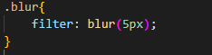filter box-shadow
Za pomocą właściwości box-shadow możemy określić dodatkowy efekt cienia dla interesującego nas elementu HTML
przykład:
Aby otrzymać taki efekt użyliśmy następującego kodu:
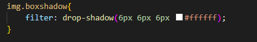filter contrast
Za pomocą właściwości filter oraz funkcji contrast() możemy zmienić procent zróżnicowania kolorów interesującego nas elementu HTML.
przykład zwiększenia kontrastu po najechaniu:
Aby otrzymać taki efekt użyliśmy następującego kodu:
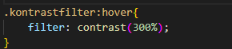przykład zmniejszenia kontrastu po najechaniu:
Aby otrzymać taki efekt użyliśmy następującego kodu:
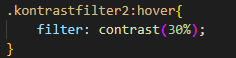filter grayscale
Za pomocą właściwości filter oraz funkcji grayscale() możemy zmienić procent szarości kolorów interesującego nas elementu HTML.
Przykład:
przykład kodu
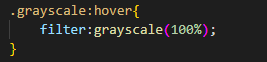filter sepia
Za pomocą właściwości filter oraz funkcji sepia() możemy zmienić procent sepii kolorów interesującego nas elementu HTML.
Przykład:
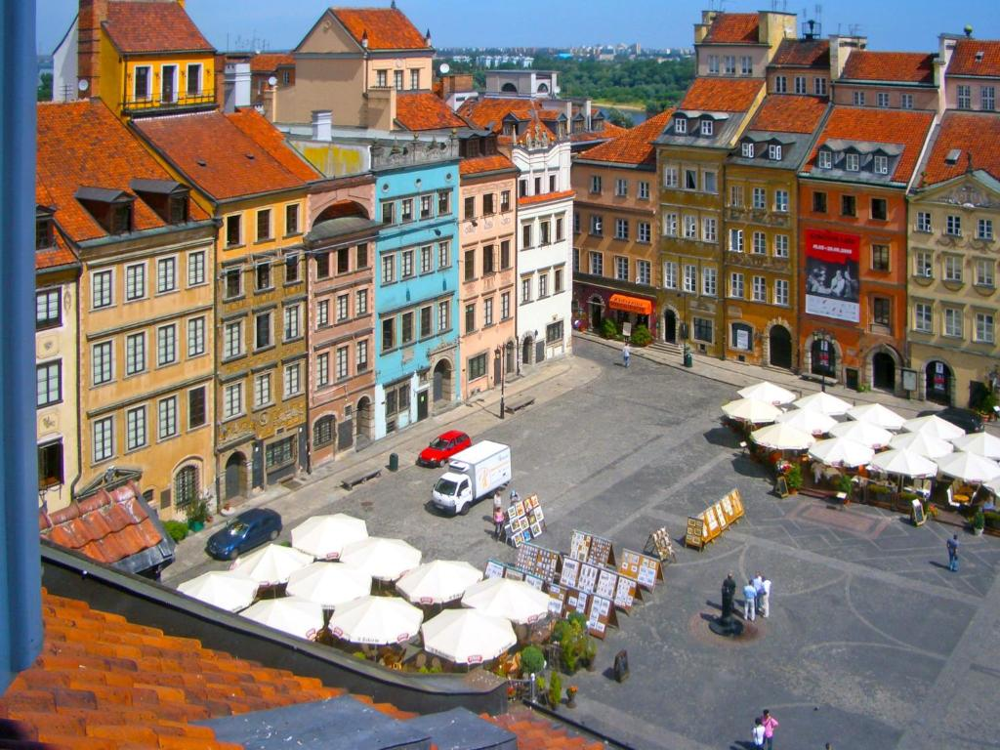przykład kodu
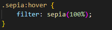filter saturate
Za pomocą właściwości filter oraz funkcji saturate() możemy zmienić procent nasycenia kolorów interesującego nas elementu HTML.
przykład:
przykład kodu
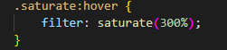filter hue-rotate
Za pomocą właściwości filter oraz funkcji hue-rotate() możemy zmienić (na podstawie koła barw) odcienie kolorów interesującego nas elementu HTML.
przykład kodu
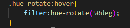filter invert
Za pomocą właściwości filter oraz funkcji invert() możemy zmienić procent odwrócenia kolorów interesującego nas elementu HTML.
przykład kodu:
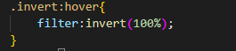filter brightness
Za pomocą właściwości filter oraz funkcji brightness() możemy zmienić procent jasności kolorów interesującego nas elementu HTML.
przykład kodu:
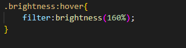filter opacity
Za pomocą właściwości filter oraz funkcji opacity() możemy zmienić procent przezroczystości kolorów interesującego nas elementu HTML.
Przykład kodu:
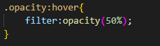kombinacja wartości
Za pomocą kombinacji kilku (oddzielonych od siebie znakiem spacji) wartości należących do właściwości filter możemy zmienić kolorystykę interesującego nas elementu HTML na kilka różnych sposobów jednocześnie
przykład kodu i wyjaśnienie: